Welcome in Origami with 3D Animation
Use directions:
- You can select any 3D Animation from the navigator in the right side.
- You can navigate in 3D scene with mouse freely,by which you can observe the
model from any direction.
- You can change the field of view in 3D scene by rotating mousewheel forwards or
backwords.
- At some 3D scenes you can click the buttons below, which stand for appropriate
observation positions the author suggests.
Copy right:
- All the two-dimensional pictures(diagrams in Yoshizawa-Randlett-System) come from https://commons.wikimedia.org/wiki/Main_Page.
- All the X3D scenes and the design of website belong to the author.
Valley Fold-2D Diagram
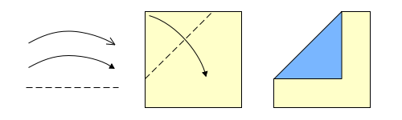
Valley fold-3D Animation
Mountain Fold-2D Diagram
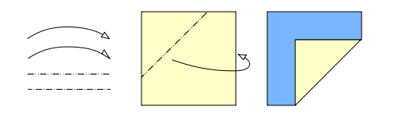
Mountain Fold-3D Animation
Fold and Unfold Valley-2D Diagram
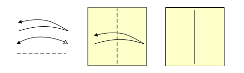
Fold and unfold valley-3D Animation
Fold and Unfold Mountain-2D Diagram
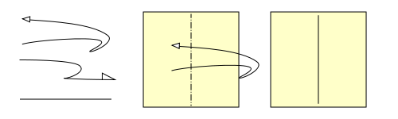
Fold and Unfold Mountain-3D Animation
Accordion fold--2D Diagram
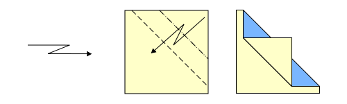
Accordion fold-3D Animation
Pull-2D Diagram
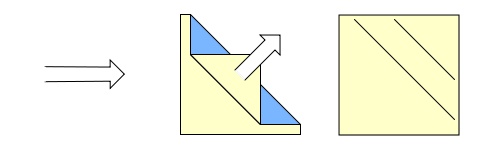
Pull-3D Animation
Inside crimp fold-2D Diagram
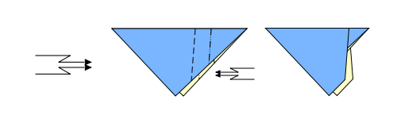
Inside crimp fold-3D Animation
Outside crimp fold-2D Diagram
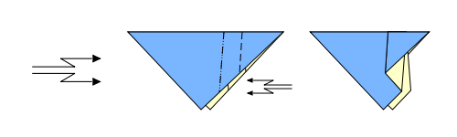
Outside crimp fold-3D Animation
Inside reverse fold-2D Diagram
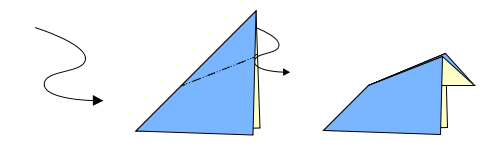
Inside reverse fold-3D Animation
Outside reverse fold-2D Diagram
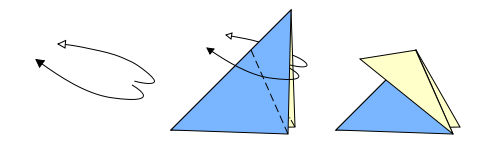
Outside reverse fold-3D Animation
Open fold-2D Diagram
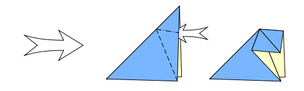
Open fold-3D Animation
Sink a corner-2D Diagram
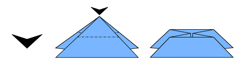
Sink a corner-3D Animation
Inflate-2D Diagram
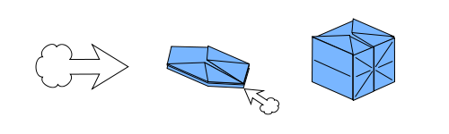
Inflate-3D Animation
Roll(Mutiple folds)-2D Diagram
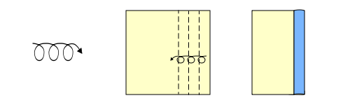
Roll(Mutiple folds)-3D Animation
Cut-2D Diagram
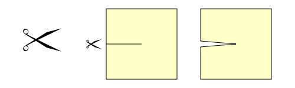
Cut-3D Animation
Repeat action-2D Diagram
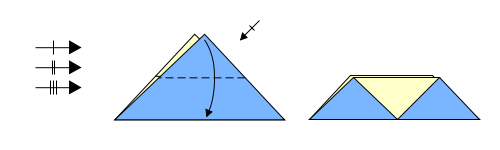
Repeat action-3D Animation